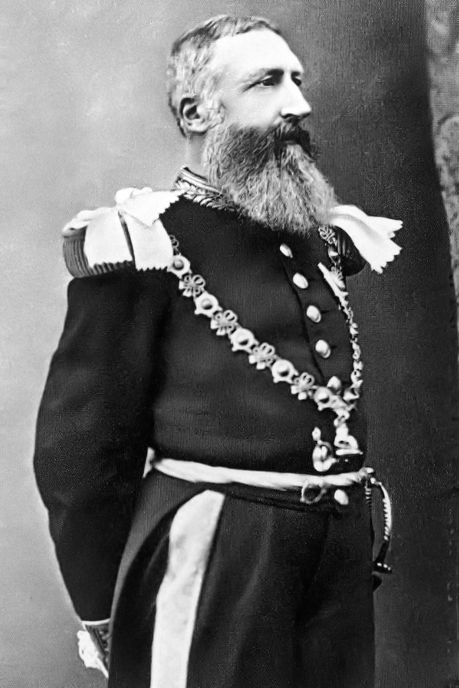

Psihopatia
-cauze și efecte-
2.Exemple
2.1.Ted Bundy
Ted Bundy iubea atentia pe care o primea datorita crimelor sale.Avand o copilarie cu probleme, a comis prima lui crima in 1966 dupa ce a absolvit Universitatea din Washington.El avea obsesia de a pastra corpurile victimelor.Oamenii pe care Bundy i-ar fi ucis erau asemănători cu fosta lui iubită din liceu: tineri, cu pielea albă (caucaziană) și cu părul brunet lung.A fost arestat in Colorado, dar a reusit sa scape.Apoi a fost iar prins dupa 8 zile si, fiind acuzat de crima si a decis sa se apere de unul singur in instanta.Intr-un final a ajuns sa fie executat pe scaunul electric in 1989.
Tot felul de diagnostice au fost puse asupra tipului său de personalitate, printre care psihopatie, tulburare bipolara, personalitati multiple si altele.
În momentul în care se afla în închisoare și așteaptă să fie executat, el a ajutat poliția să investigheze alte crime, iar în 1988 a recunoscut că a ucis încă opt femei, un număr mai mare decât cel cunoscut de autorități.
2.2.Regele Leopold al II-lea

Rege al Belgiei intre 1865 si 1909, este cunoscut pentru conducerea statului Congo intre anii 1885 si 1908.Milioane de locuitori ai acestui stat au murit datorita acestei persoane.Scopul lui era sa extraga fildes si cauciuc din regiunea Congo.Atrocitatiile comise in timpul conducerii lui includ sclavia, tortura si uciderea.Persoanele care nu reuseau sa isi indeplineasca sarcinile erau pedepsite.Urmarile crimelor acestui psihopat au continuat pana la revolutia din Congo din 1960.
La începutul anilor 1900, rapoarte de exploatare scandaloase și încălcări ale drepturilor omului au condus la proteste internaționale. Campania care a examinat regimul lui Leopold a fost condusă de diplomatul britanic Roger Casement și fostul funcționar de transport maritim E.D. Morel și a devenit prima mișcare a drepturilor omului.
2.3.Josef Mengele
Josef Mengele a fost un doctor nazist la lagarul de exterminare de la Auschwitz si este cunoscut pentru experimentele lui medicale pe prizonieri.A studiat filozofia si mai apoi si-a luat diploma de doctor. In timpul celui de-al doilea Razboi Mondial a fost ofiter medical in Franta si Rusia.Mai tarziu supravegheaza experimente ce au avut ca scop obtinerea rasei ariane.Este cunoscut pentru experimentele lui pe gemeni, avand o obsesie pentru acestia. După război Mengele a părăsit Auschwitz-ul și a plecat la Gross-Rosen. În aprilie 1945 a fugit, dar a fost capturat și deținut la Nürnberg. A fost eliberat de aliați, care nu îi cunoșteau identitatea. După ce a stat ascuns la o fermă din Bavaria, Mengele a plecat în 1949 în Argentina, unde s-au refugiat și alți naziști. A divorțat de Irene și în 1958 s-a căsătorit cu văduva fratelui său Karl, Martha. Ea și fiul ei s-au mutat în Argentina pentru a fi împreună cu Mengele.
2.4.Tommy Lynn Sells
Tommy Lynn Sells este probabil unul dintre cei mai periculosi psihopati din istorie.A recunoscut ca o omorat peste 70 de persoane, dar doar 3 victime au fost confirmate.
Sells a susținut că, la vârsta de opt ani, a început să petreacă timp cu un bărbat pe nume Willis Clark, care a început să îl molesteze cu acordul mamei sale. Sells a declarat că acest abuz l-a afectat foarte mult și că își va retrăi experiențele în timpul comiterii crimelor sale.
El a ocupat mai multe locuri de muncă la frizeri pe termen scurt. A băut foarte mult, a abuzat de droguri și a fost închis de mai multe ori.
Una dintre victimele lui a reusit sa scape si a ajutat la prinderea faptasului.Astfel el a fost condamnat la moarte si executat in Texas.
{kind=link}
{kind=link}